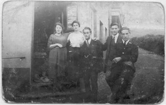

L’ancienne Bureau de Poste
Ceci est le site de l’ancien bureau de poste. Vers la fin de XIXème siècle, le commerce était géré par W H Roberts, le responsable de livrer tous les besoins de Nant Gwrtheyrn. Les derniers gérands étaient la famille Jordan. A l’époque les gars du village aimaient se rassembler devant la poste – discuter et rigoler. Après sa clôture, la Société Nant Gwrtheyrn a acheté les locaux où elle a installé son
 W H Roberts, le maître de poste près de la porte de la poste vers 1910.
W H Roberts, le maître de poste près de la porte de la poste vers 1910.
 W H Roberts, le maître de poste près de la porte de la poste vers 1910.
W H Roberts, le maître de poste près de la porte de la poste vers 1910.
 Certains villageois discutent devant la Poste dans la neige.
Certains villageois discutent devant la Poste dans la neige.
Olwen Post, Llanaelhaearn, Dinah Mary Roberts, Post, Thomas Gwylym Evans, Manchester House, Augustus Roberts, Post, Facteur.